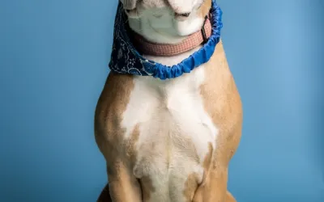

Limited Ingredient Diets for Pets
Jan 31, 2024 | Dog Care, Dog Life
It can be expensive to be a pet owner. While buying a pet from a responsible breeder has a high initial cost, the biggest ongoing cost for most dog and cat owners is feeding their pet and having a comprehensive guide for them to follow. Despite this, as pet owners we want the best for our pets...
read more
Relief Vets: Enhancing the Quality of Life for Dogs through Expert Care
Jan 11, 2024 | Dog Care, Dog Life
Relief veterinarians are an essential part of the animal healthcare industry. At Relief Vets, we offer veterinary relief services to ensure that pet owners can access expert care for their furry companions. Our team of dedicated relief veterinarians provides top-notch care to enhance the quality...
read more

Paws and Preparedness: A Comprehensive Guide on Handling Pet Emergenciese
Jan 9, 2024 | Dog Life, Dog Care
In the vibrant tapestry of life, our four-legged companions add immeasurable joy and unconditional love to our daily existence. As devoted pet parents, ensuring the safety and well-being of our furry friends is not just a responsibility but a heartfelt commitment. Yet, unforeseen emergencies can...
read more
Paws in Transition: Navigating the Journey of Moving with Your Furry Companion
Jan 9, 2024 | Dog Life
Moving is a transformative journey, marked by anticipation, excitement, and the promise of new beginnings. However, for those who share their lives with four-legged friends, the process of relocating takes on a unique dimension. The transition from one home to another can be a source of anxiety...
read more

Exploring the World of Bull Terrier Mix: A Comprehensive Guide to Unique Crossbreeds
Jan 6, 2024 | Dog Breeds & Personality
A cross between the Old English Terrier and the Bulldog, you may already recognize this breed thanks to the popular Target ads that feature the company’s adorable mascot, Bullseye. A breed that is loved by many, in recent years, it’s become popular to breed this dog with other breeds such as the...
read more

Exploring the Weimaraner Pitbull Mix: A Comprehensive Guide to This Unique Crossbreed
Jan 1, 2024 | Dog Breeds & Personality
The Pitbull Weimaraner mix, a unique blend of the American Pit Bull Terrier and Weimaraner epitomizes strength, agility, and a profound emotional depth. This medium to large breed is not just an excellent companion for those with active lifestyles but also a perfect addition to family...
read more
How to Write a Research Paper about Your Dog
Dec 25, 2023 | Dog Life
Contrary to popular belief, you can write a research paper on any topic. It is always better to write academic papers on topics that you enjoy. Suppose you write about a topic that interests you. In that case, you put much of your personality into the writing, filling the paper with interesting...
read more
What equipment do you need for sighthounds?
Nov 29, 2023 | Uncategorized
If you own or have come across a sighthound you will have noticed that they have quite a unique body shape, temperament, and features, all of which naturally translates to them having slightly different needs than a more traditional breed of dog. What is a sighthound? First, just to...
read more
The Social Canine: Unveiling the Most Sociable and Dog-Friendly Breeds
Nov 27, 2023 | Dog Breeds & Personality, Dog Life
Welcoming a canine companion into your life is a joyous occasion, and for many, the social aspect of a dog is a crucial factor. In this exploration of the most sociable and dog-friendly breeds, we’ll delve into the characteristics that make certain breeds stand out as social butterflies....
read more